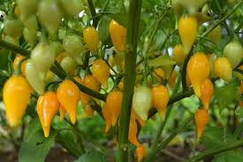
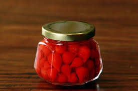
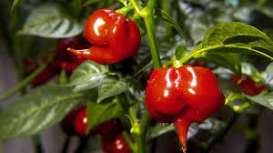

O ideal é manter sua plantação de pimenta em lugares que variam entre 21 a 30°C. Evite deixar os frutos expostos a muito sol, pois isso pode afetar a sua coloração natural. Em vez disso, opte por regiões onde o Sol bate em menor quantidade. O solo em que a pimenta biquinho vai ser plantada não pode ser salinizado.
A moderação no consumo da pimenta deve ser ainda maior para pessoas com problemas gástricos, tais como gastrite e úlcera. Isso por conta do efeito agressivo que o alimento pode ter sobre as paredes estomacais.
Sim, é possível comer pimenta biquinho crua. Devido ao seu sabor suave, a pimenta biquinho é um alimento termogênico de fácil consumo in natura.
A ingestão indiscriminada de pimentas com um nível tão alto de capsaicina pode gerar alguns efeitos colaterais, como aumento da temperatura, dores de cabeça, dores de estômago e até quadros mais complicados, como ataque de asma ou queimaduras no esôfago.
Não existe uma quantidade determinada para o consumo da pimenta. A única orientação é não exagerar, como comer o fruto cerca de 3 a 4 vezes ao dia. É interessante que pessoas que não têm problemas de saúde, como a gastrite ou a hemorroidas, ingiram a pimenta entre uma ou duas vezes ao dia.